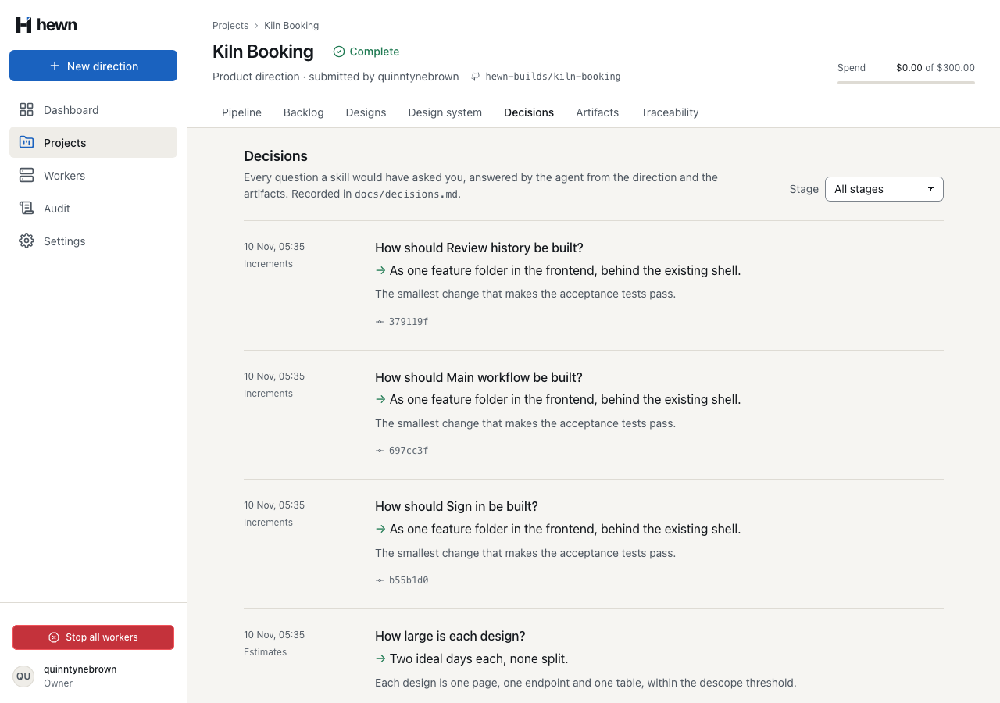
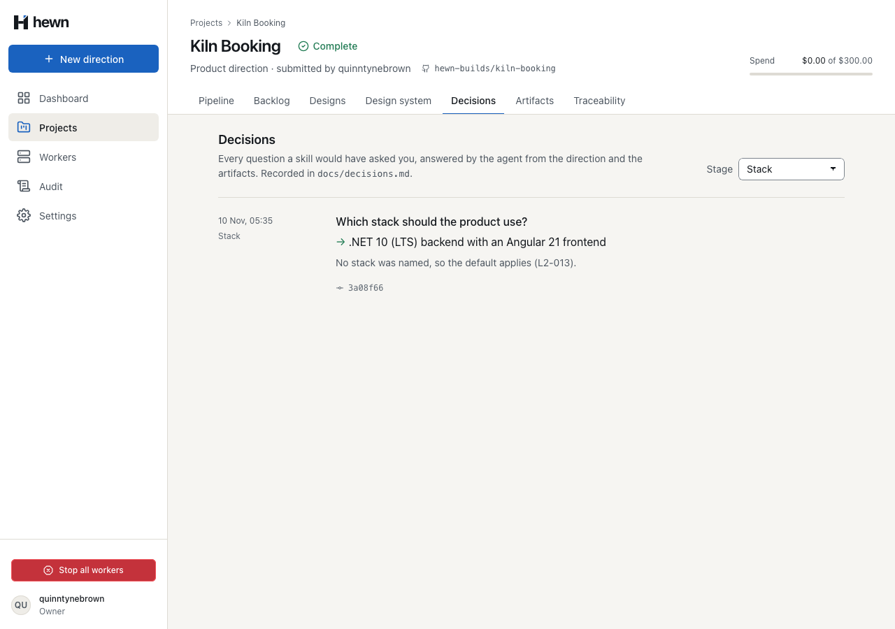
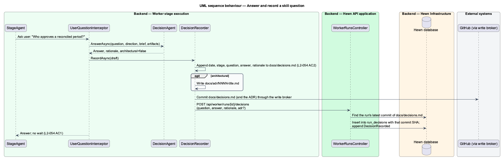
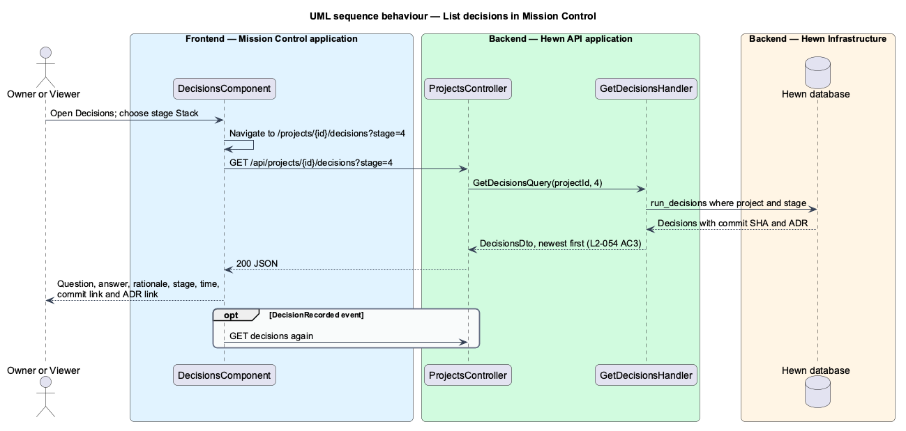
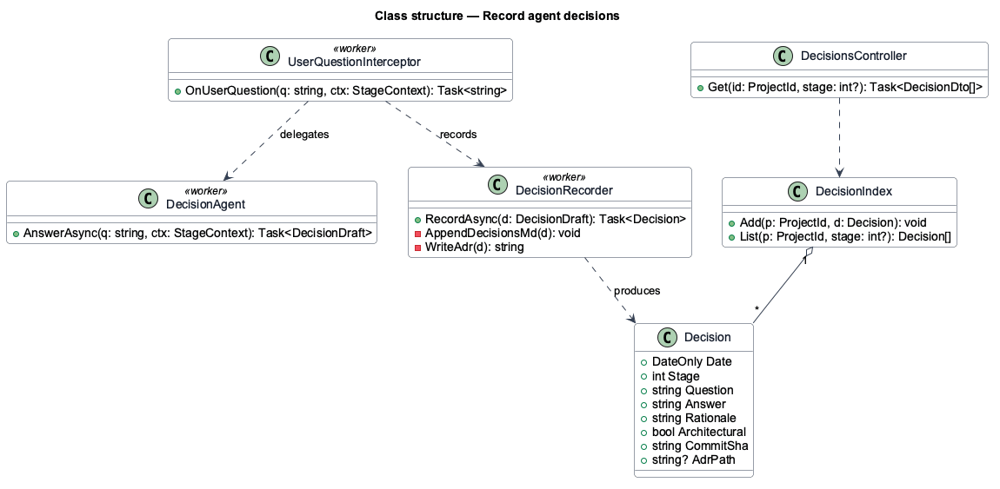
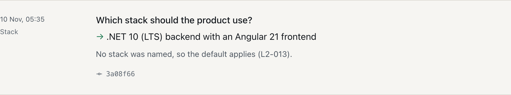
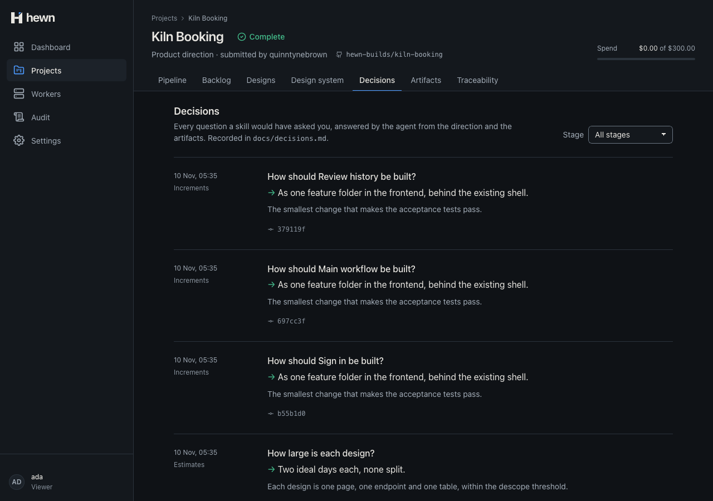
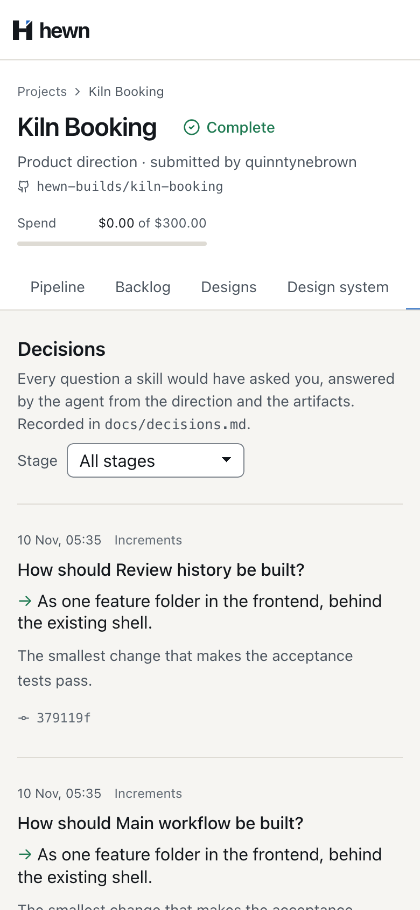
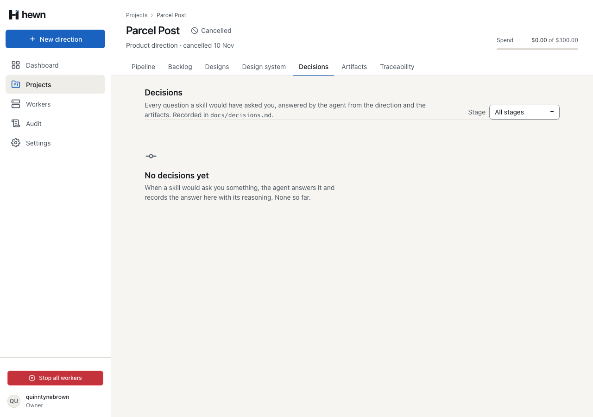
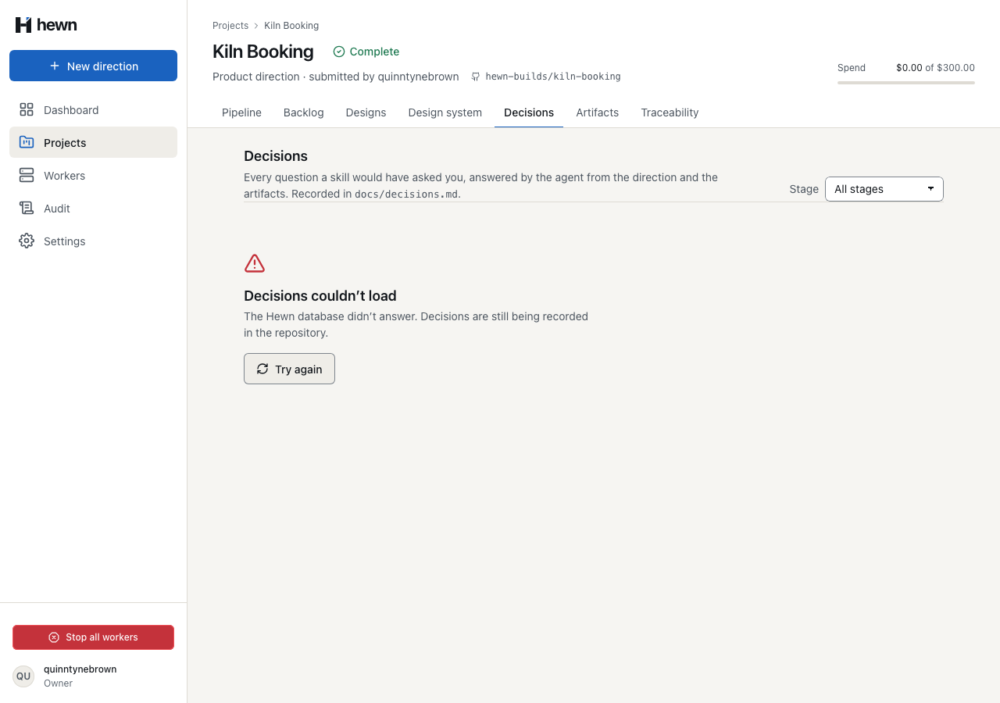

What the agents decided, by stage, with the commit that recorded it.





// L2-054 AC3: the worker reports decisions after committing them, so the run's latest commit of the log recorded them.
var commits = await db.GitHubMutations.AsNoTracking()
.Where(m => m.RunId == run.Id && m.Kind == "commit")
.OrderByDescending(m => m.Id)
.Select(m => m.Result)
.ToListAsync(cancellationToken);
var commitSha = commits.Select(CommitRecord.Read).FirstOrDefault(c => c.Paths.Contains(CommitPolicy.DecisionLog))?.Sha;
foreach (var reported in command.Decisions)
var decision = new RunDecision(
run,
SecretRedactor.Redact(reported.Question),
SecretRedactor.Redact(reported.Answer),
SecretRedactor.Redact(reported.Rationale ?? string.Empty),
now,
commitSha,
reported.Adr);
export function parseDecisions(text: string): { question: string; answer: string; rationale: string; adr?: string }[] {
return text
.split(/^## /m)
.slice(1)
.flatMap((entry) => {
const question = /\*\*Question:\*\*\s*(.+)/.exec(entry)?.[1]?.trim();
const answer = /\*\*Answer:\*\*\s*(.+)/.exec(entry)?.[1]?.trim();
const rationale = /\*\*Rationale:\*\*\s*(.+)/.exec(entry)?.[1]?.trim() ?? '';
// L2-054 AC2: the ADR an architecture decision links, as docs/adr/NNNN-slug.md.
const adr = /\*\*ADR:\*\*.*\]\(adr\/(\d{4}-[a-z0-9-]+\.md)\)/.exec(entry)?.[1];
return question && answer ? [{ question, answer, rationale, ...(adr ? { adr: `docs/adr/${adr}` } : {}) }] : [];
});
}
// L2-054 AC3: decisions already on the default branch were reported by the run that recorded them.
const reported = new Set(parseDecisions(readDecisions(directory)).map((d) => d.question));
/** Reports the decisions the last commit wrote, once each, so the Decisions tab links them to it. */
const reportDecisions = async () => {
const recorded = parseDecisions(readDecisions(directory)).filter((d) => !reported.has(d.question));
if (recorded.length === 0) return;
await context.recordDecisions(recorded);
for (const d of recorded) reported.add(d.question);
};
const commitChanges = async (step: StepKey, message: string) => {
const now = snapshot(directory);
const paths = [...now.keys()].filter((p) => now.get(p) !== committed.get(p));
if (paths.length === 0) return;
await context.commit(step, message, read(directory, paths), branch);
committed = now;
if (paths.includes(DECISIONS)) await reportDecisions();
};
.OrderByDescending(d => d.RecordedAt)
.ThenByDescending(d => d.Id)
.Select(d => new ProjectDecisionDto(
d.Id,
d.Stage,
d.Stage < Stages.Count ? Stages.Names[d.Stage] : $"Stage {d.Stage}",
d.Question,
d.Answer,
d.Rationale,
d.RecordedAt,
d.CommitSha,
repo is null || d.CommitSha is null ? null : $"https://github.com/{repo}/commit/{d.CommitSha}",
d.Adr is null ? null : new DecisionAdrDto(
d.Adr,
$"ADR {Path.GetFileName(d.Adr)[..4]}",
repo is null ? null : $"https://github.com/{repo}/blob/{d.CommitSha ?? "HEAD"}/{d.Adr}")))]);
{
"id": 16,
"stage": 4,
"stageName": "Stack",
"question": "Which stack should the product use?",
"answer": ".NET 10 (LTS) backend with an Angular 21 frontend",
"rationale": "No stack was named, so the default applies (L2-013).",
"recordedAt": "2026-11-10T10:35:16.813948+00:00",
"commit": "3a08f663caef23397271f476b7ac29776444df34",
"commitUrl": "https://github.com/hewn-builds/kiln-booking/commit/3a08f663caef23397271f476b7ac29776444df34",
"adr": null
}
## 2026-11-10 · Stage 4 Stack **Question:** Which stack should the product use? **Answer:** .NET 10 (LTS) backend with an Angular 21 frontend **Rationale:** No stack was named, so the default applies (L2-013).

<label class="inline-label"
>Stage
<select class="select select--auto input--sm" (change)="choose($event)">
<option value="" [selected]="filter() === undefined">All stages</option>
@for (s of stages; track s.number) {
<option [value]="s.number" [selected]="filter() === s.number">{{ s.name }}</option>
}
</select></label
>
protected choose(event: Event): void {
const value = (event.target as HTMLSelectElement).value;
void this.router.navigate(['/projects', this.projectId(), 'decisions'], {
queryParams: value ? { stage: value } : {},
});
}
// The commit is the run's last one that wrote docs/decisions.md, not merely its last one.
var pwa = decisions.GetProperty("decisions")[1];
Assert.Equal("Stack", pwa.GetProperty("stageName").GetString());
Assert.Equal(stackSha, pwa.GetProperty("commit").GetString());
Assert.Equal("docs/adr/0002-keep-the-default-stack.md", pwa.GetProperty("adr").GetProperty("path").GetString());
Assert.Equal("ADR 0002", pwa.GetProperty("adr").GetProperty("title").GetString());
Assert.Equal($"https://github.com/hewn-builds/ledgerline/blob/{stackSha}/docs/adr/0002-keep-the-default-stack.md", pwa.GetProperty("adr").GetProperty("url").GetString());
Assert.True(pwa.GetProperty("recordedAt").GetDateTimeOffset() > oldest.GetProperty("recordedAt").GetDateTimeOffset());
}
const stack = decisions.decision('Which stack should the product use?');
await expect(stack.answer).toHaveText('.NET 10 (LTS) backend with an Angular 21 frontend');
await expect(stack.commit).toHaveText(/^\s*[0-9a-f]{7}$/);
const href = (await stack.commit.getAttribute('href'))!;
const [, repository, sha] = /^https:\/\/github\.com\/([^/]+\/[^/]+)\/commit\/([0-9a-f]{40})$/.exec(href)!;
// The linked commit is the one that wrote the decision into docs/decisions.md.
const commits = (await (await page.request.get(`/api/fakes/github/${repository}/commits`)).json()) as {
sha: string;
paths: string[];
}[];
expect(commits.find((c) => c.sha === sha)?.paths).toContain('docs/decisions.md');
const log = await page.request.get(`/api/fakes/github/${repository}/contents/docs/decisions.md?ref=${sha}`);
expect(await log.text()).toMatch(/· Stage 4 Stack\n\n\*\*Question:\*\* Which stack should the product use\?/);
6 new, through the real API and worker endpoints
ADRs reported; stage 10 reports its decisions
5 behaviour, 1 live, 6 visual, 5 a11y



